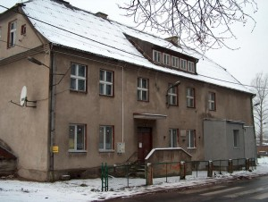

Szkoła w Bojanie należy do najstarszych w okolicy, po Koleczkowie. Pierwszy budynek szkolny, jak podaje kronika tej placówki oświatowej, wybudowano z inicjatywy dworu w 1773 r. Była to mała szkółka, kryta strzechą, z jedną salą lekcyjna o powierzchni 25 m². W 1887 r., do szkoły uczęszczało 83 uczniów. Szkołę stopniowo rozbudowywano i modernizowano. Gliniane mury i podłogi zastąpiono cegłą paloną. Później na podłogi włożono deski, a słomę na dachu zastąpiono trzciną. W latach 1895-1906 nauczycielem kierującym szkołą był Józef Daczkowski.
W 1910r. po kapitalnej przebudowie szkoła w Bojanie stała się budynkiem piętrowym. W owym budynku wygospodarowano dwie sale lekcyjne po 54 m² każda oraz dwa mieszkania nauczycielskie. Od tego czasu szkoła była dwuklasówką, uczącą cztery oddziały łączone, to znaczy klasa I i II oraz klasy III i IV. Po odzyskaniu niepodległości w 1920 r. kierownictwo szkoły w Bojanie powierzono Bernardowi Borkowiczowi, po nim w 1925 roku kierownikiem szkoły został mianowany Feliks Ciepłuch, który zginął 22 marca 1940 roku w obozie Stutthof. W czasie okupacji hitlerowskiej był okres że szkoła z braku nauczyciela była nieczynna.Historyczny Budynek Szkoły Lekcje uruchomiono według niemieckiego programu. Naukę prowadził Folksdojcz z Łodzi Brener, po jego powołaniu do wojska, panna Ruth, a później córka Niemca Raascha.
W pierwszym roku po wyzwoleniu szkoła w Bojanie była nieczynna. Budynek szkolny był zniszczony działaniami wojennymi. W drugiej połowie 1946 prowizoryczne zajęcia prowadzono w budynku Franciszka Schütza, funkcję kierownika szkoły przyjął nauczyciel Bernard Rohde. Po półtora roku zastąpił go Stefan Ropel. W roku 1947 przystąpiono do odbudowy zniszczonego przez działania wojenne budynku szkolnego. Odbudowę prowadzono etapami przy znacznym wkładzie robocizny i pieniędzy miejscowej ludności. W 1949 r. odbudowano dom gospodarczy, a w rok później wykonano ogrodzenie obiektu szkolnego od strony ulicy. W roku 1951/52 szkoła w Bojanie stała się szkołą siedmioklasową. Rozbudowę budynku szkolnego zakończono 14 grudnia 1953 r. W roku szkolnym 1955/56 nastąpiła kolejna zmiana na kierowniczym stanowisku w szkole. Odszedł Stefan Ropel, jego miejsce na krótko zajął Jerzy Trepczyk, którego wkrótce zmienił Franciszek Makowski. Od 1 września 1959 roku kierownictwo w szkole przejął Bolesław Bork. Szkoła w Bojanie stała się z dniem 1 września 1972 roku filią szkoły w Koleczkowie. Na miejscu pozostały początkowo 4, a później 3 klasy nauczania początkowego. W roku 1984 r. dotychczasowy dyrektor przeszedł na emeryturę, funkcję dyrektora przejęła jego córka Barbara Tomaszewska, która opuściła Polskę w 1989 r. Od 1990 roku szkołą w Bojanie kieruje Danuta Hefta. W tym czasie zwiększyła stopień organizacyjny szkoły do ośmiu klas. W 1999 roku wprowadzona została reforma oświaty, powstały gimnazja. W dniu 1 września 1999 roku Szkoła Podstawowa w Bojanie wprowadziła się do nowego obiektu.
Budynek nowej szkoły w Bojanie oddano do użytku 1 września 1999 roku. Do szkoły uczęscza ponad 500 dzieci, które uczą się w 24 oddziałach. Organizowane są zajęcia poza szkolne oraz pozalekycjne. W szkole funckjonuje stołówka. Kilka lat temu przy szkole powstała nowoczesna hala widowiskowo-sportowa, która oprócz miejsca lekcji WF dla młodzieży stanowi obiekt rekreacyjny dla mieszkańców. W hali funkcjonuje siłownia oraz organizowane są mecze. W obiekcie organizowane są również różne gminne imprezy.
Źródło oraz opracowanie na podstawie witryny Szkoły Podstawowej w Bojanie.
© 2020 Bojano. Wszelkie prawa do zdjęć i treści, które nie pochodzą z innych źródeł są zastrzeżone.